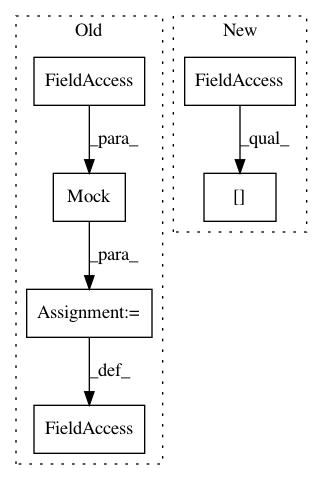

63d9bd4a9cb034501d855f691eb167704536b8e1,tests/components/climate/test_nuheat.py,TestNuHeat,test_setup_platform,#TestNuHeat#Any#,55
Before Change
hass = Mock()
hass.config.units.temperature_unit.return_value = "F"
hass.data = Mock()
hass.data.__getitem__ = Mock(side_effect=data.__getitem__)
config = {}
add_devices = Mock()
discovery_info = {}
After Change
thermostat = mocked_thermostat(self.api, "12345", "F")
thermostats = [thermostat]
self.hass.data[nuheat.NUHEAT_DOMAIN] = (self.api, ["12345"])
config = {}
add_devices = Mock()
In pattern: SUPERPATTERN
Frequency: 3
Non-data size: 6
Instances
Project Name: home-assistant/home-assistant
Commit Name: 63d9bd4a9cb034501d855f691eb167704536b8e1
Time: 2017-12-27
Author: derek@broox.com
File Name: tests/components/climate/test_nuheat.py
Class Name: TestNuHeat
Method Name: test_setup_platform
Project Name: automl/auto-sklearn
Commit Name: d39f63e2ded8464e6168d77495816e0fd3ecb885
Time: 2016-07-13
Author: feurerm@informatik.uni-freiburg.de
File Name: test/test_pipeline/test_regression.py
Class Name: SimpleRegressionPipelineTest
Method Name: test_predict_batched_sparse
Project Name: automl/auto-sklearn
Commit Name: d39f63e2ded8464e6168d77495816e0fd3ecb885
Time: 2016-07-13
Author: feurerm@informatik.uni-freiburg.de
File Name: test/test_pipeline/test_regression.py
Class Name: SimpleRegressionPipelineTest
Method Name: test_predict_batched